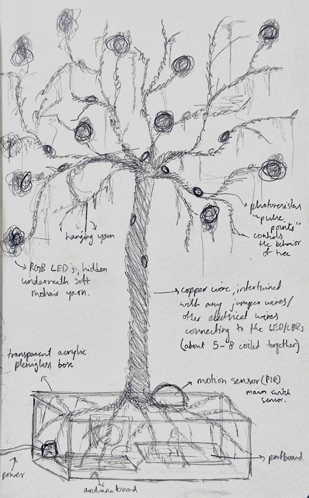

Electronic Art
Electrical Roots


Interaction demo: presence and touch response.
How it Works
· Wake up and move hand over it → tree "wakes up": subtle light shift
· Hover / stay close → nature sounds begin to play
· Touch / cup leaves / interact and "care for it" → light intensity + color change
· No movement for a certain period of time → tree returns to "sleep" (light, sound, etc turns off)
Process

Early concept sketch.